Admin Servicios : catálogo de los 873 servicios fiscales
El catálogo de servicios fiscales es el corazón funcional de Facil. 873 servicios actuales, organizados en jerarquía Ministerio → Sector → Categoría → Servicio. Cada servicio tiene su tarificación, sus documentos requeridos, sus procedimientos, sus referencias legales. El admin gestiona el ciclo de vida completo : creación (asistente 7 tabs), modificación, plantillas de documentos/procedimientos, enriquecimiento IA para las descripciones.
1. Catálogo principal
La pantalla de inicio lista los 873 servicios con búsqueda, filtros (ministerio, sector, tipo, estado), tri por columna. Cada línea : código único, nombre ES/FR/EN, ministerio, tasa, estado (activo, inactivo, borrador, deprecated).
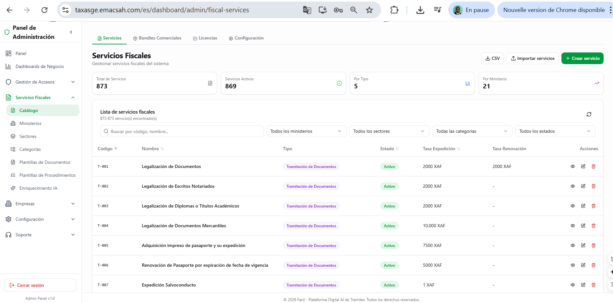
2. Asistente de creación de servicio (7 tabs)
Crear un nuevo servicio requiere completar 7 pestañas. El asistente guía el admin paso a paso, con validación cada vez antes de pasar a la siguiente.
Tab 1 — Información básica
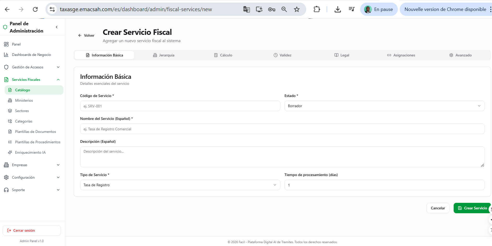
Tab 2 — Jerarquía
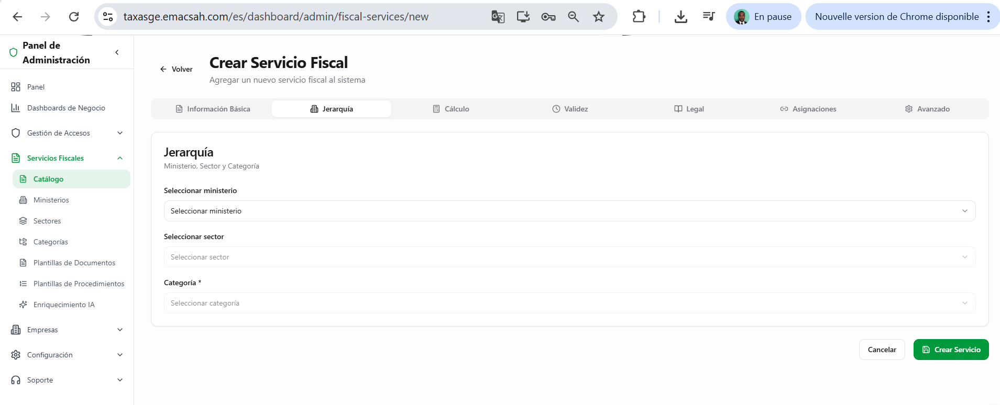
Tab 3 — Cálculo
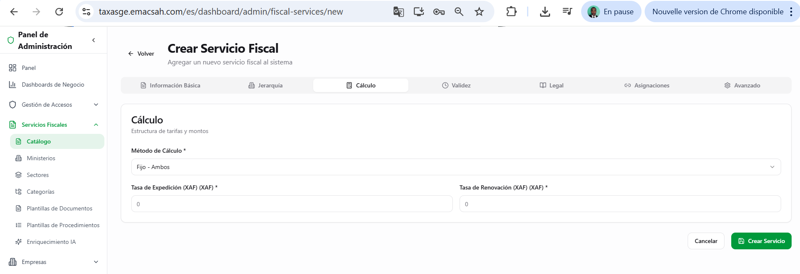
Tab 4 — Validez
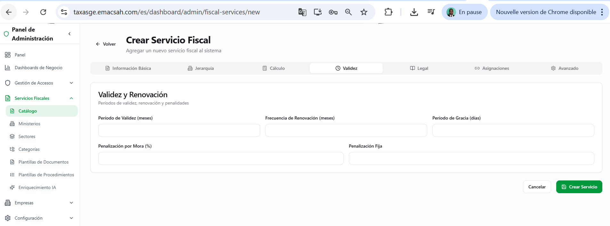
Tab 5 — Legal
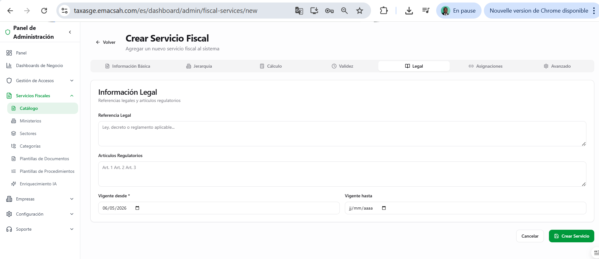
Tab 6 — Asignaciones
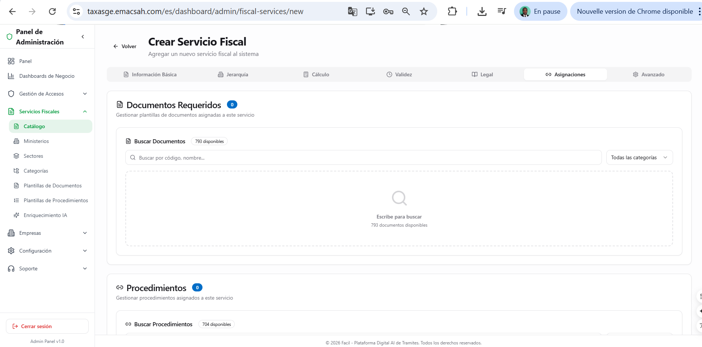
Tab 7 — Avanzado
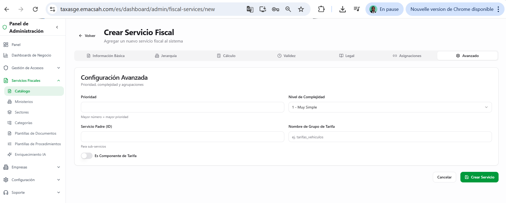
3. Gestión de la jerarquía : Ministerios, Sectores, Categorías
Tres pantallas dedicadas para gestionar los niveles supérieurs de la taxonomía. La jerarquía debe ser configurada ANTES de crear los servicios.
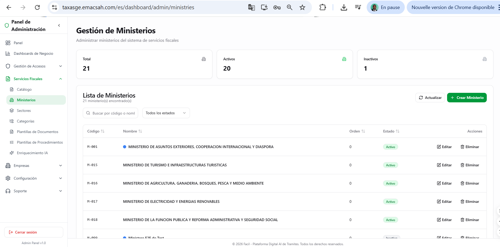
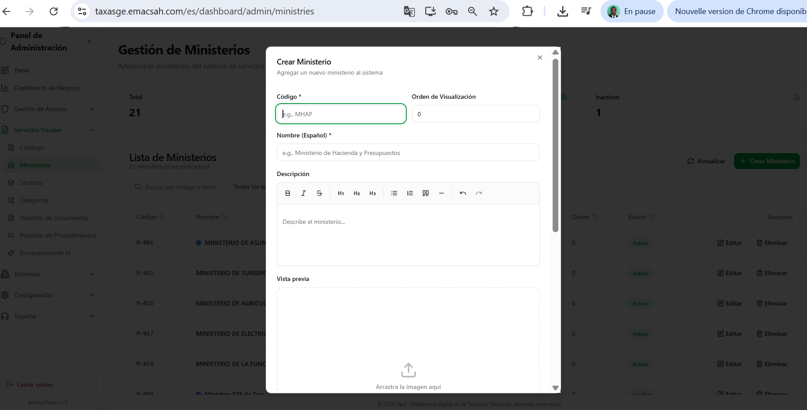
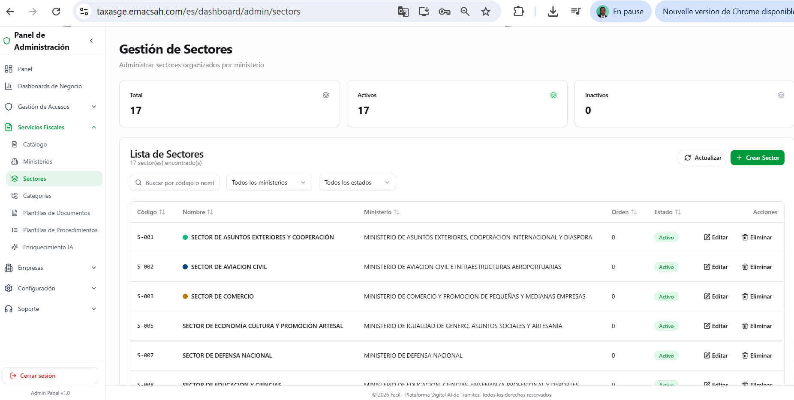
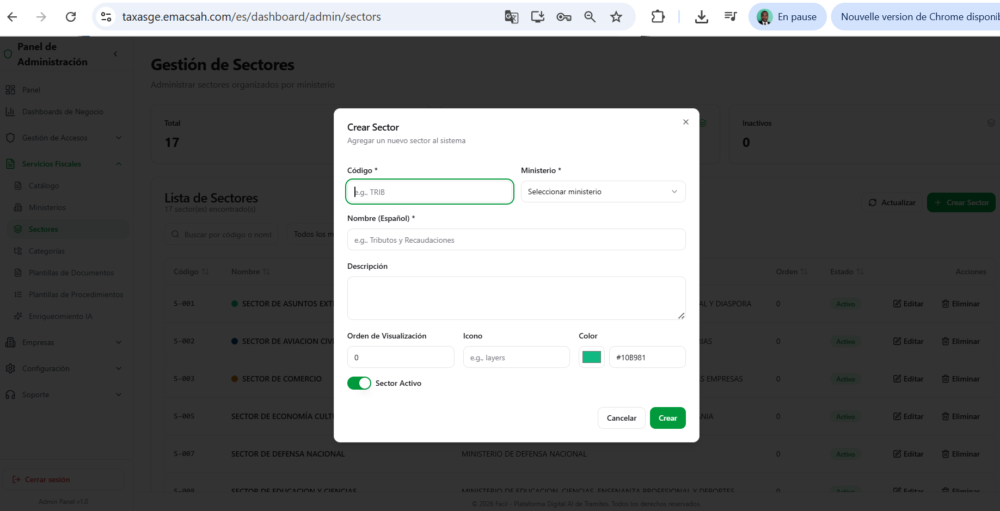
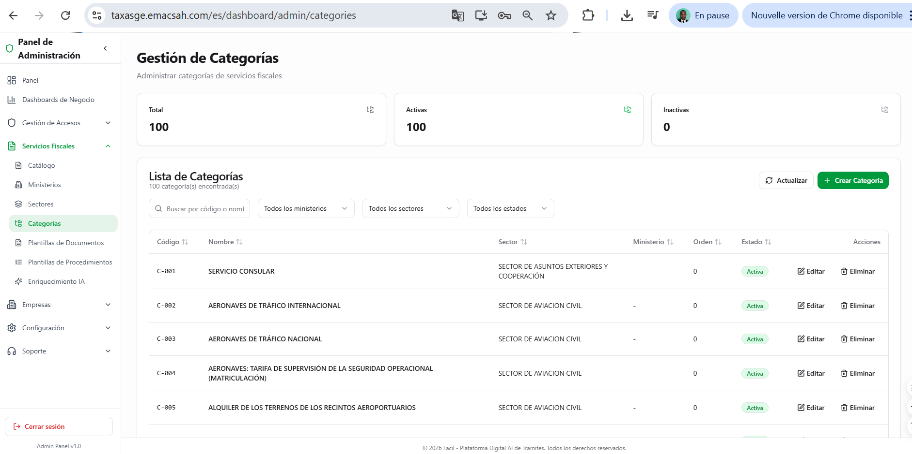
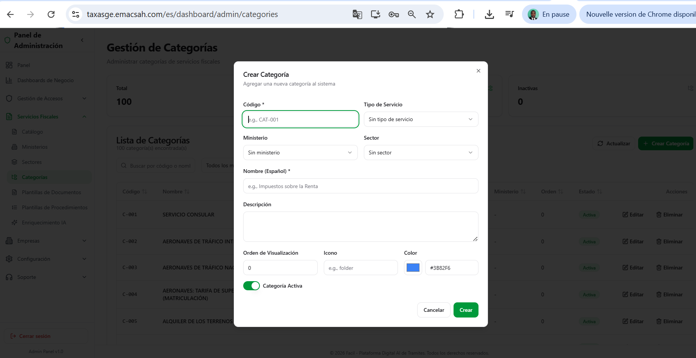
4. Plantillas de documentos
Cada servicio genera un documento oficial (pasaporte, licencia, certificado, recibo). Las plantillas reusables están centralizadas con código, nombre, descripción, validez en meses.
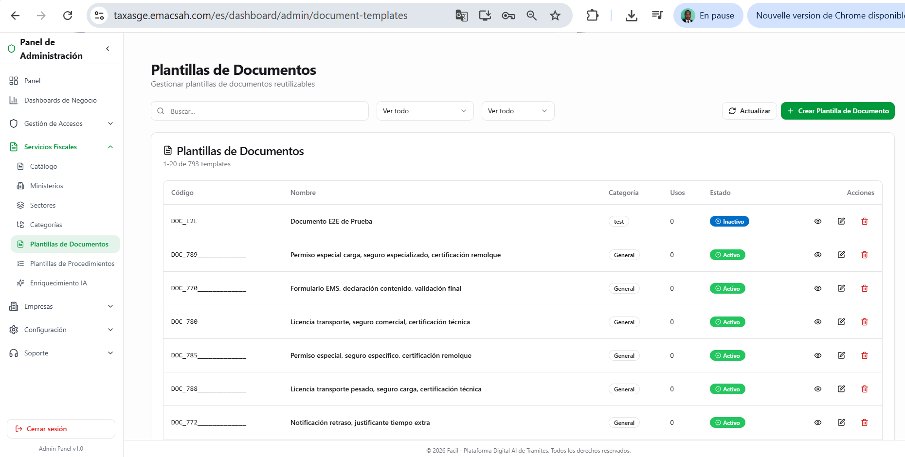
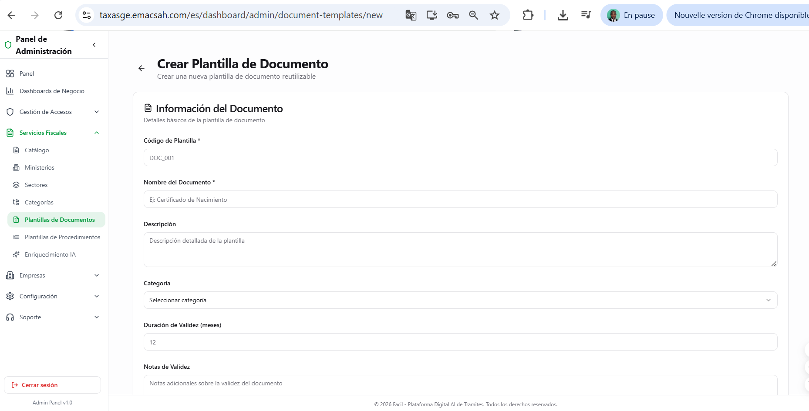
5. Plantillas de procedimientos
Cada procedimiento describe los pasos administrativos a seguir (orden, condiciones, validaciones, agentes implicados). 11 plantillas disponibles, reutilizables para varios servicios similares.
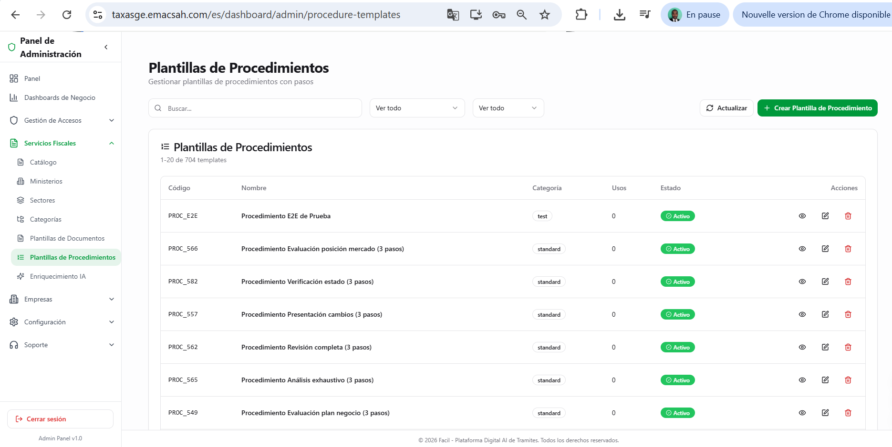
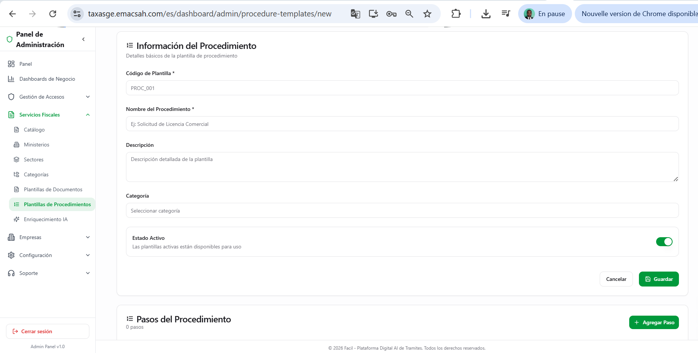
6. Enriquecimiento IA : generación masiva de descripciones
Para acelerar la documentación de los 873 servicios, Facil propone un módulo IA que genera descripciones ES/FR/EN basadas en los datos estructurados (jerarquía, tarificación, referencia legal). El admin revisa, aprueba o rechaza individualmente cada borrador.
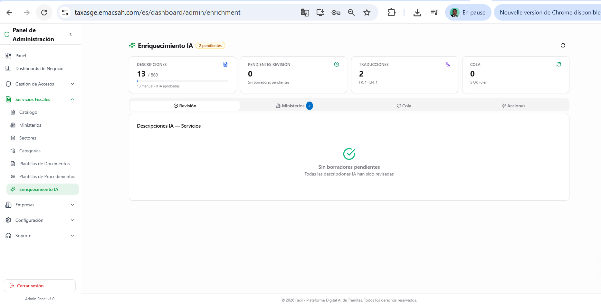
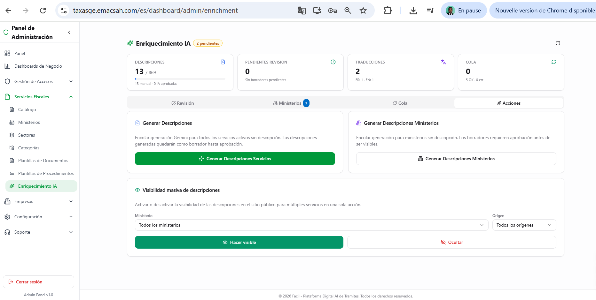
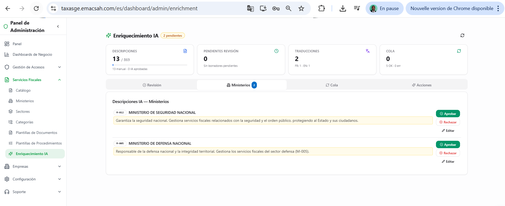